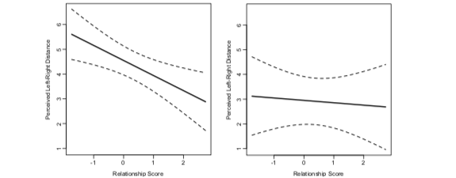
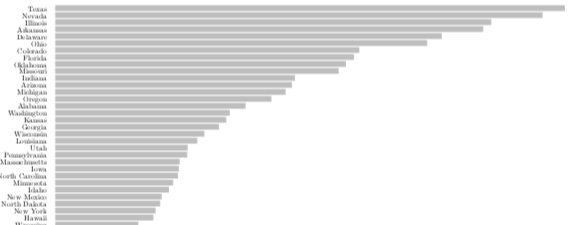
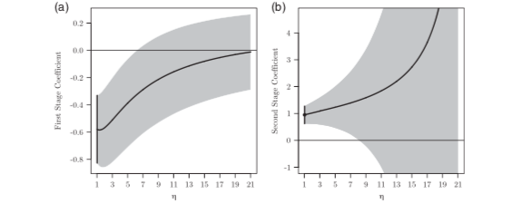
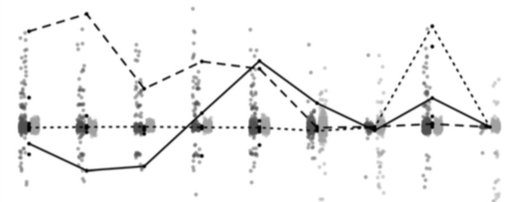
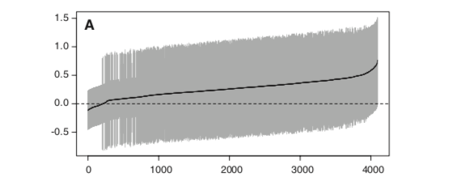
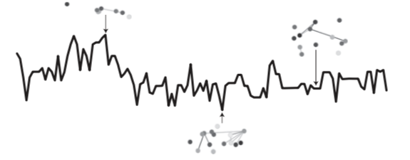
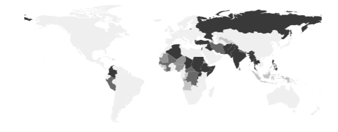
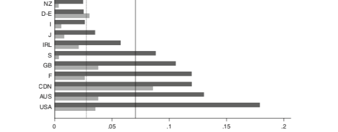

Forthcoming at American Journal of Political Science. With James Adams and Christopher Wlezien.

Political Science Research and Methods. First View.

Political Science Research and Methods (2019) 7(2): 367-38. With Max Gallop.

American Political Science Review (2018) 112(4): 1090-1095.

Business and Politics (2014) 16(2): 221–246. With Benjamin Barber and Jan Pierskalla.

American Journal of Political Science (2013) 57(4): 892-911. With Nils W. Metternich, Cassy Dorff, Max Gallop, and Michael D. Ward.

International Studies Review (2013) 515(4): 473-490. With Michael D. Ward, Nils W. Metternich, Cassy Dorff, Max Gallop, Florian M. Hollenbach, and Anna Schultz.

Journal of European Social Policy (2009) 19(3): 195-212. With Marius R. Busemeyer and Achim Goerres.